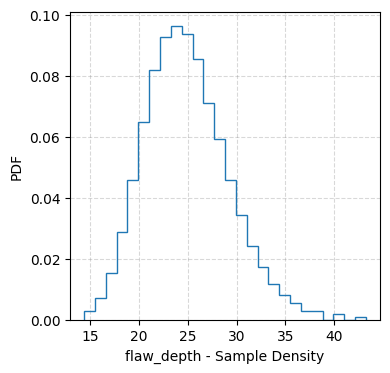
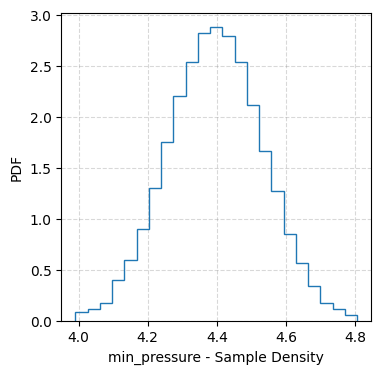
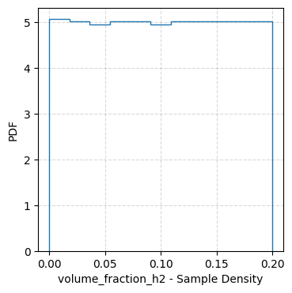
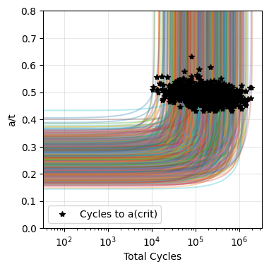
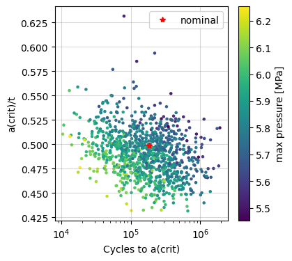
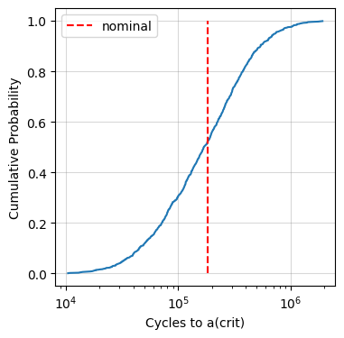

[46]:
%matplotlib inline
%load_ext autoreload
%autoreload 2
The autoreload extension is already loaded. To reload it, use:
%reload_ext autoreload
[47]:
import numpy as np
import matplotlib.pyplot as plt
from helpr.physics.api import CrackEvolutionAnalysis
from helpr.utilities.unit_conversion import convert_psi_to_mpa, convert_in_to_m
from helpr.utilities.plots import (plot_cycle_life_cdfs, plot_cycle_life_pdfs, plot_cycle_life_criteria_scatter,
plot_pipe_life_ensemble, failure_assessment_diagram_equation)
from probabilistic.capabilities.uncertainty_definitions import (UniformDistribution, TruncatedNormalDistribution,
TruncatedLognormalDistribution, DeterministicCharacterization)
from probabilistic.capabilities.plotting import plot_sample_histogram
[48]:
# # turn warnings back on for general use
# import warnings
# warnings.filterwarnings('ignore')
Probabilistic Evaluation for Single Pipe Lifetime
Problem Specification
Geometry
[49]:
pipe_outer_diameter = DeterministicCharacterization(name='outer_diameter',
value=convert_in_to_m(36)) # pipe outer diameter, m
wall_thickness = DeterministicCharacterization(name='wall_thickness',
value=convert_in_to_m(0.406)) # pipe wall thickness, m
Material Properties
[50]:
yield_strength = DeterministicCharacterization(name='yield_strength',
value=convert_psi_to_mpa(52_000)) # material yield strength, psi
fracture_resistance = DeterministicCharacterization(name='fracture_resistance',
value=55) # fracture resistance (toughness), MPa m1/2
Operating Conditions
[51]:
# maximum pressure during oscillation, MPa
max_pressure = TruncatedNormalDistribution(name='max_pressure',
uncertainty_type='aleatory',
nominal_value=convert_psi_to_mpa(840),
mean=convert_psi_to_mpa(850),
std_deviation=convert_psi_to_mpa(20),
lower_bound=convert_psi_to_mpa(850)-3*convert_psi_to_mpa(20),
upper_bound=convert_psi_to_mpa(850)+3*convert_psi_to_mpa(20))
# minimum pressure during oscillation, MPa
min_pressure = TruncatedNormalDistribution(name='min_pressure',
uncertainty_type='aleatory',
nominal_value=convert_psi_to_mpa(638),
mean=convert_psi_to_mpa(638),
std_deviation=convert_psi_to_mpa(20),
lower_bound=convert_psi_to_mpa(638)-3*convert_psi_to_mpa(20),
upper_bound=convert_psi_to_mpa(638)+3*convert_psi_to_mpa(20))
temperature = UniformDistribution(name='temperature',
uncertainty_type='aleatory',
nominal_value=293,
upper_bound=300,
lower_bound=285) # gas blend temperature variation, K
volume_fraction_h2 = UniformDistribution(name='volume_fraction_h2',
uncertainty_type='aleatory',
nominal_value=0.1,
upper_bound=0.2,
lower_bound=0) # % volume fraction H2 in natural gas blend, fraction
Initial Crack Dimensions
[52]:
flaw_depth = TruncatedLognormalDistribution(name='flaw_depth',
uncertainty_type='aleatory',
nominal_value=25,
mu=3.2,
sigma=.17,
upper_bound=80,
lower_bound=0.001) # initial flaw depth, % wall thickness
flaw_length = DeterministicCharacterization(name='flaw_length',
value=convert_in_to_m(1.575)) # length of initial crack/flaw, m
Quantity of Interest (QoI)
[53]:
plotted_variable = 'Cycles to a(crit)'
Probabilistic Settings
[54]:
sample_type = 'lhs'
sample_size = 1_000
Physics Modeling Choices
[55]:
stress_intensity_method = 'api' # Stress intensity factor method used
surface='inside'
Analysis
Using LHS sampling of uncertain variables
[56]:
analysis = CrackEvolutionAnalysis(outer_diameter=pipe_outer_diameter,
wall_thickness=wall_thickness,
flaw_depth=flaw_depth,
max_pressure=max_pressure,
min_pressure=min_pressure,
temperature=temperature,
volume_fraction_h2=volume_fraction_h2,
yield_strength=yield_strength,
fracture_resistance=fracture_resistance,
flaw_length=flaw_length,
aleatory_samples=sample_size,
sample_type=sample_type,
stress_intensity_method=stress_intensity_method,
surface=surface)
analysis.perform_study()
/Users/bbschro/Development/helpr/src/helpr/physics/stress_state.py:129: UserWarning: Stress state exceeding 72% SMYS
wr.warn('Stress state exceeding 72% SMYS', UserWarning)
Postprocessing
[57]:
for parameter in analysis.uncertain_parameters:
analysis.input_parameters[parameter].plot_distribution()
plot_sample_histogram(analysis.sampling_input_parameter_values[parameter],
f'{parameter} - Sample Density',
density=True,
histtype='step')



[58]:
analysis.generate_probabilistic_results_plots(plotted_variable=plotted_variable)
_, _ = analysis.assemble_failure_assessment_diagram()




[59]:
analysis.save_results()
[59]:
'Results/date_04_12_2024_time_20_30/'